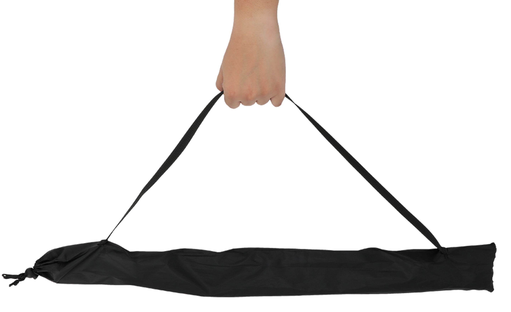
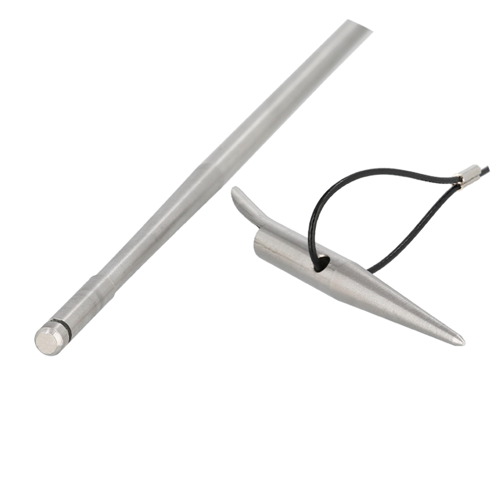

長さの調節可能
状況に応じて


POINT
01
好みに合わせて長さ調整可能
フィールド(水深)や、自身の好みに合わせて
銛の長さ調整を行うことができます。
最長で使う場合：233cm
最短で使う場合：166cm
4本全てを接続することで
最長の233cmに、
1本抜いて接続すると
166cmで使用できます。
POINT
02
超軽量で持ち運びも便利
使用時は最大233cmから、収納時は70cmに
縮まるので持ち運びの際も便利です。

取っ手の付いた
収納袋付きなので、
銛を袋に入れて
持ち運びが可能です。
コンパクトに収納でき、
組み立てる際も簡単なので
家の玄関等に置いておいても
邪魔になりません。
POINT
03
ポールはアルミ製の硬い素材
ゴムを引いた際にポールが曲がらず威力が
落ちにくいよう、アルミの素材を採用しました。

チョッキ型は大型の魚を突く際に
とてもオススメな銛の種類で、
ホールド力が抜群に強く
刺さった獲物を逃しにくくなっています。